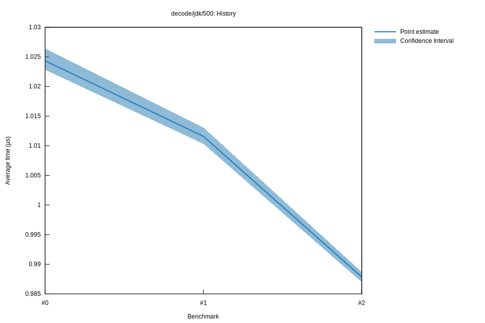

# 22022-10-16T20:21:30+03:00
|
Lower Bound |
Estimate |
Upper Bound |
| Value: |
0.99µs |
0.99µs |
0.99µs |
| Throughput: |
645.44MiB/s |
644.89MiB/s |
644.34MiB/s |
| Change in Value: |
-2.4498% |
-2.3153% |
-2.1947% |
| Change in Throughput: |
+2.5113% |
+2.3702% |
+2.2439% |
No change in performance detected.
# 12022-10-16T17:38:20+03:00
|
Lower Bound |
Estimate |
Upper Bound |
| Value: |
1.01µs |
1.01µs |
1.01µs |
| Throughput: |
630.54MiB/s |
629.76MiB/s |
628.83MiB/s |
| Change in Value: |
-1.2926% |
-1.1185% |
-0.9524% |
| Change in Throughput: |
+1.3095% |
+1.1312% |
+0.9615% |
No change in performance detected.
# 02022-10-15T17:26:51+03:00
|
Lower Bound |
Estimate |
Upper Bound |
| Value: |
1.02µs |
1.02µs |
1.03µs |
| Throughput: |
622.84MiB/s |
621.92MiB/s |
620.66MiB/s |